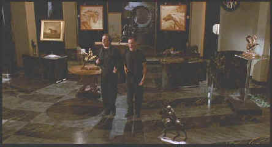

Columbia Tristar/1991/100m/ANA1.85. FS 1.33
Bruce Willis plays Hudson Hawk with a quip and a smirk and it usually works. Hawk, a master thief, has been spending the last ten years in Sing Sing(You'll get the joke if you see the movie)and on his release is forced into a plot to steal a couple of priceless artifacts from the Vatican. The significance of these treasures is illuminated by a very entertaining opening sequence depicting Leonardo Da Vinci at work. Hawk's partner in crime and song, Tommy Messina picks him up at the prison gates and they are off and running into an adventure that will culminate in an unlikely flight and a virtual tour of the best sites in Rome.
 |
Danny and Bruce swinging on a star©Columbia Tristar |
The story of Hudson Hawk
comes from the lyrics Willis wrote for a song named for a special wind that blows off New
York's Hudson River. How many writers and how many drafts took Hudson Hawk apart is
probably a good question because it is certainly overworked. The core characters of Hawk
and Messina have lots of potential. A lot of the eccentricities work very well. The
constant by-play between Hawk and Tommy referring to Hawk's incredible memory for the
length of recorded songs leads to a cleverly structured sequence.
Danny Aiello is a great match for Willis as Messina. Aiello's
breezy style couples with Willis's quick wit for some entertaining verbal jousting. The
villains play it at varying degrees of over-the-top. Richard E. Grant is hyper as power
hungry Darwin Mayflower and Sandra Bernhard is outrageous as his wife Minerva. James
Coburn plays it relatively straight as the mysterious George Kaplan and Andie MacDowell
provides Willis with a female object of desire as Anna Baragli.
Hudson Hawk is given a first class production ride.
Michael Lehmann, who directed the very clever Heathers and the entertaining
Truth About Cats and Dogs, knows his way around comedy by appears to be a gun for hire
director on Hudson Hawk. The production team includes the magic cinematography of
Dante Spinotti and imaginative production design by Jackson De Govia.
Steven de Souza and Daniel Waters get script credit.
Hudson Hawk fans can soar with pride over the DVD
production from Columbia Tristar. The anamorphic images are beautifully detailed. You can
practically feel the texture of the centuries old Italian buildings that add flavor to
Hawk's field of vision. Color is well saturated, the picture has pop to spare and
artifacts are practically non-existent. Dynamic picture range is outstanding. The picture
never seems blown out or underexposed. The Dolby Digital 2-channel mix is very spacious.
Effects are well placed, explosions exciting, the music and dialogue well managed. The
very frank commentary from director Michael Lehmann is a welcome bonus on this special
edition of Hudson Hawk. Lehmann does not shy away from pointing out perceived flaws and
critical lambasting. His displays a wry sense of humor, a welcome accompaniment to a film
that doesn't take itself seriously.